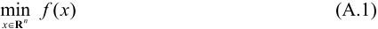
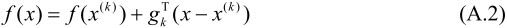
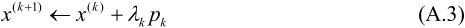
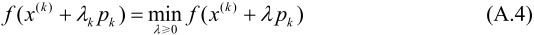
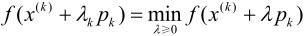

f(x(k))为f(x)在x(k)的梯度。
f(x(k))为f(x)在x(k)的梯度。附录A 梯度下降法
梯度下降法（gradient descent）或最速下降法（steepest descent）是求解无约束最优化问题的一种最常用的方法，有实现简单的优点。梯度下降法是迭代算法，每一步需要求解目标函数的梯度向量。
假设f(x)是Rn上具有一阶连续偏导数的函数。要求解的无约束最优化问题是

x*表示目标函数f(x)的极小点。
梯度下降法是一种迭代算法。选取适当的初值x(0)，不断迭代，更新x的值，进行目标函数的极小化，直到收敛。由于负梯度方向是使函数值下降最快的方向，在迭代的每一步，以负梯度方向更新x的值，从而达到减少函数值的目的。
由于f(x)具有一阶连续偏导数，若第k次迭代值为x(k)，则可将f(x)在x(k)附近进行一阶泰勒展开：

这里，gk＝g(x(k))＝f(x(k))为f(x)在x(k)的梯度。
求出第k+1次迭代值x(k+1)：

其中，pk是搜索方向，取负梯度方向pk＝-f(x(k))， k是步长，由一维搜索确定，即k使得
k是步长，由一维搜索确定，即k使得

梯度下降法算法如下：
算法A.1（梯度下降法）
输入：目标函数f(x)，梯度函数g(x)＝f(x)，计算精度 ；
；
输出：f(x)的极小点x*。
（1）取初始值x(0)∊Rn，置k＝0
（2）计算f(x(k))
（3）计算梯度gk＝g(x(k))，当||gk||<时，停止迭代，令x*＝x(k)；否则，令pk＝-g(x(k))，求k，使

（4）置x(k+1)＝x(k)+kpk，计算f(x(k+1))
当||f(x(k+1))-f(x(k))||<或||x(k+1)-x(k)||<时，停止迭代，令x*＝x(k+1)
（5）否则，置k＝k+1，转（3）。
当目标函数是凸函数时，梯度下降法的解是全局最优解。一般情况下，其解不保证是全局最优解。梯度下降法的收敛速度也未必是很快的。